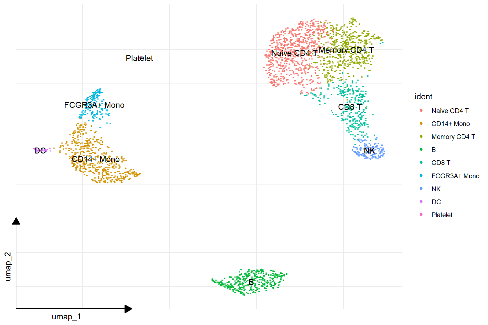
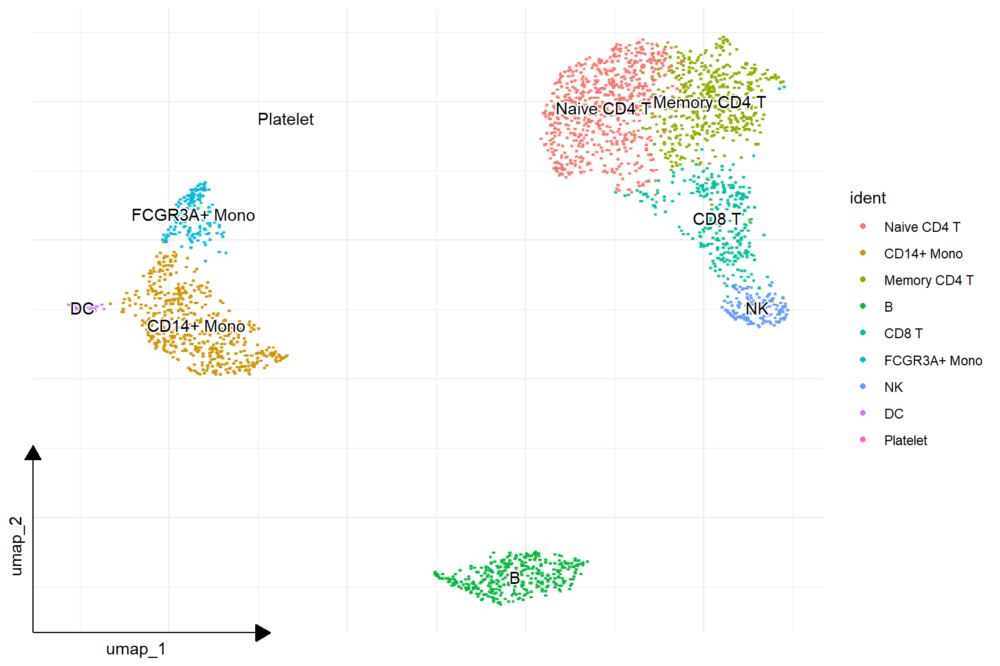
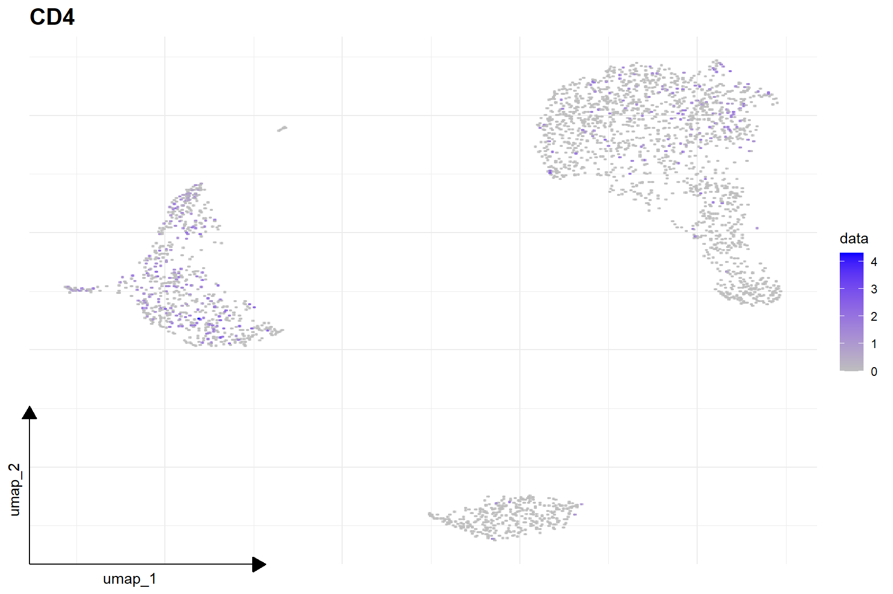
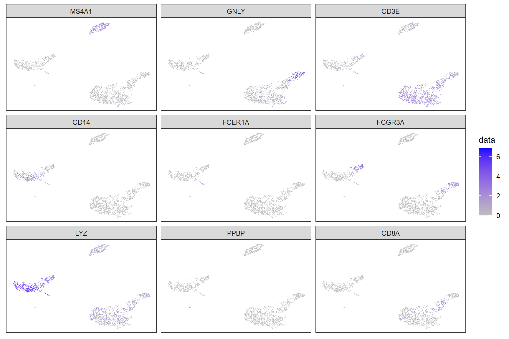
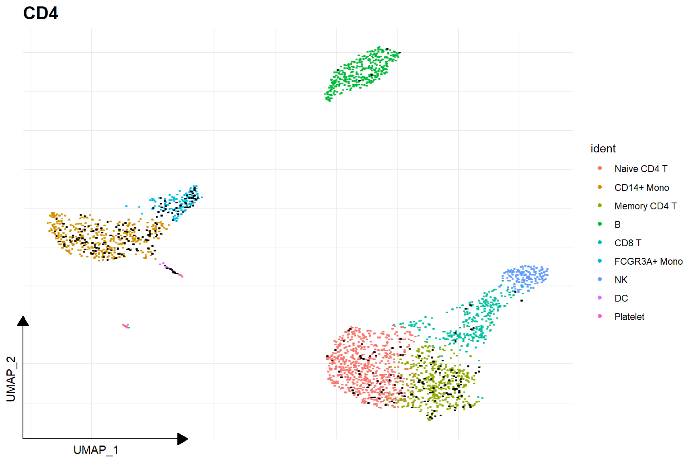
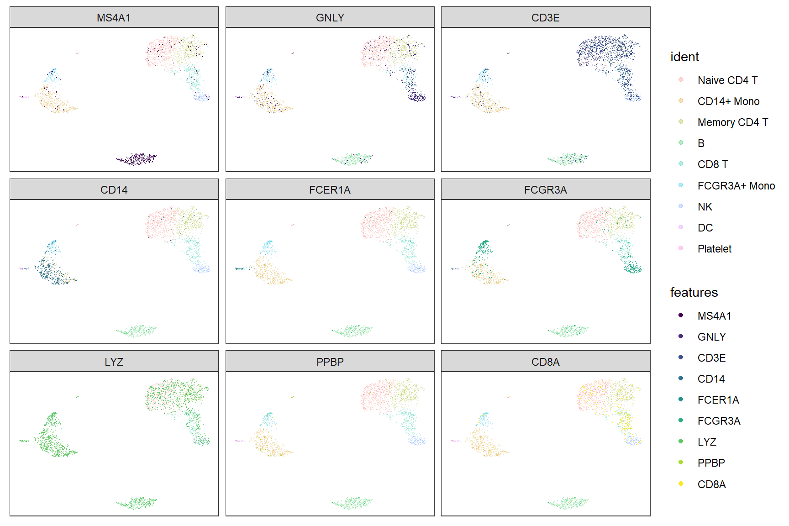
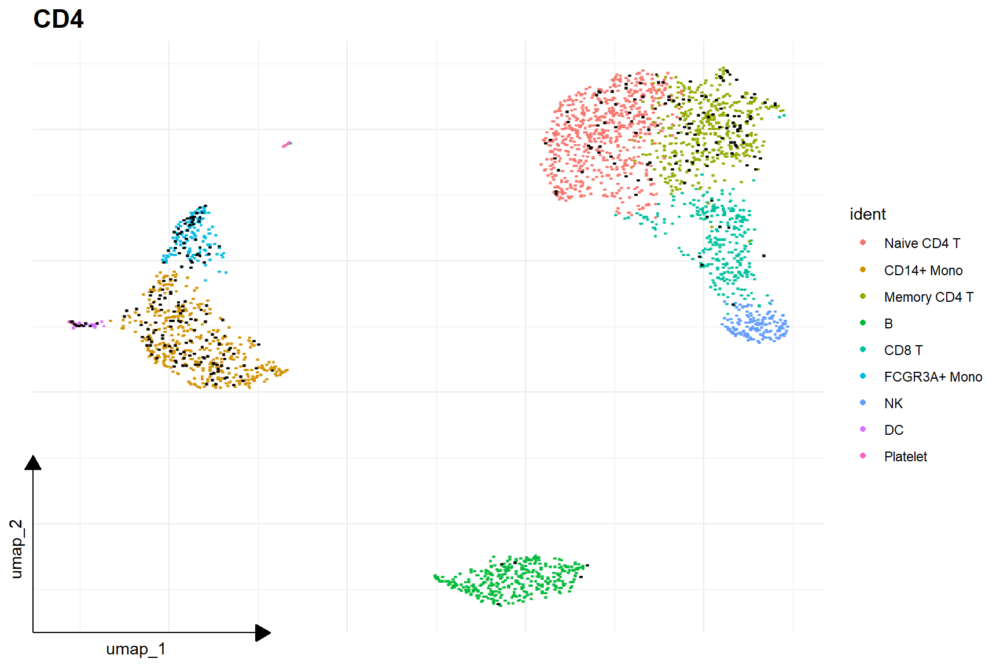
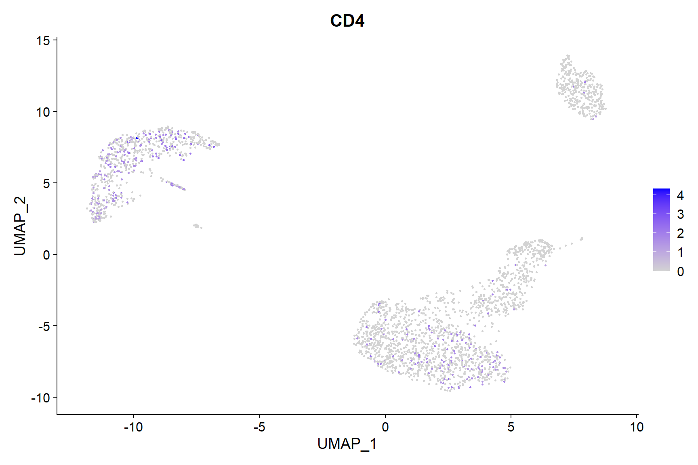
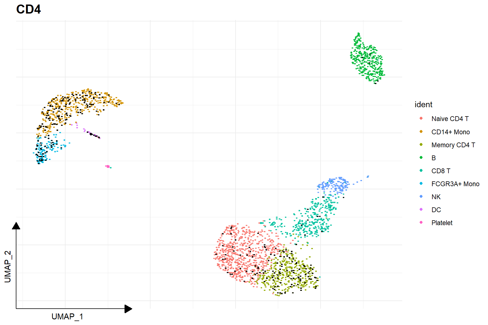

Visualizing single cell data
Department of Bioinformatics, School of Basic Medical Sciences, Southern Medical Universityguangchuangyu@gmail.com
2023-11-01
1 Visualizing Seurat objects
knitr::opts_chunk$set(tidy = FALSE,
warning = FALSE,
message = FALSE,
eval=TRUE,
echo=TRUE,
cache=TRUE,
fig.width = 9,
fig.height = 6,
out.width="100%"
)library(Seurat)
dir = "data/filtered_gene_bc_matrices/hg19"
pbmc.data <- Read10X(data.dir = dir)
pbmc <- CreateSeuratObject(counts = pbmc.data, project = "pbmc3k",
min.cells=3, min.features=200)
pbmc## An object of class Seurat
## 13714 features across 2700 samples within 1 assay
## Active assay: RNA (13714 features, 0 variable features)pbmc[["percent.mt"]] <- PercentageFeatureSet(pbmc, pattern = "^MT-")
pbmc <- subset(pbmc,
subset = nFeature_RNA > 200 & nFeature_RNA < 2500 & percent.mt < 5
)pbmc <- NormalizeData(pbmc, normalization.method = "LogNormalize",
scale.factor = 10000)
pbmc <- ScaleData(pbmc)pbmc <- FindVariableFeatures(pbmc, selection.method = "vst",
nfeatures = 2000)
pbmc <- RunPCA(pbmc, features = VariableFeatures(object = pbmc))
pbmc <- RunUMAP(pbmc, dims = 1:10)## Modularity Optimizer version 1.3.0 by Ludo Waltman and Nees Jan van Eck
##
## Number of nodes: 2638
## Number of edges: 95927
##
## Running Louvain algorithm...
## Maximum modularity in 10 random starts: 0.8728
## Number of communities: 9
## Elapsed time: 0 seconds## Assigning cell type identity to clusters
cluster.ids <- c("Naive CD4 T", "CD14+ Mono", "Memory CD4 T",
"B", "CD8 T", "FCGR3A+ Mono", "NK", "DC", "Platelet")
names(cluster.ids) <- levels(pbmc)
pbmc <- RenameIdents(pbmc, cluster.ids)1.1 Dimensional reduction plot
# DimPlot(pbmc, reduction = "umap",
# label = TRUE, pt.size = 0.5)
library(ggplot2)
library(ggsc)
sc_dim(pbmc) + sc_dim_geom_label()
sc_dim(pbmc) +
sc_dim_geom_label(geom = shadowtext::geom_shadowtext,
color='black', bg.color='white')
1.2 Visualize ‘features’ on a dimensional reduction plot
features = c("MS4A1", "GNLY", "CD3E",
"CD14", "FCER1A", "FCGR3A",
"LYZ", "PPBP", "CD8A")
# FeaturePlot(pbmc,'CD4')
sc_feature(pbmc, 'CD4')

Here is the real ‘features’ on dimensional plot

sc_dim(pbmc, alpha=.3) +
ggnewscale::new_scale_color() +
sc_dim_geom_feature(pbmc, features, mapping=aes(color=features)) +
scale_color_viridis_d()

sc_dim(pbmc, alpha=.3) +
ggnewscale::new_scale_color() +
sc_dim_geom_feature(pbmc, features, mapping=aes(color=features)) +
scale_color_viridis_d()
1.4 Visualize selected clusters

sc_dim(pbmc, color='grey') +
sc_dim_geom_sub(subset=selected) +
sc_dim_geom_label(geom = shadowtext::geom_shadowtext,
mapping = aes(subset = ident %in% selected),
color='black', bg.color='white')